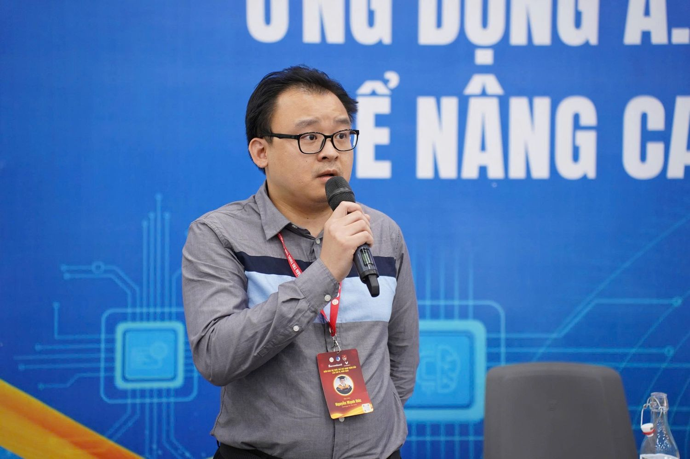
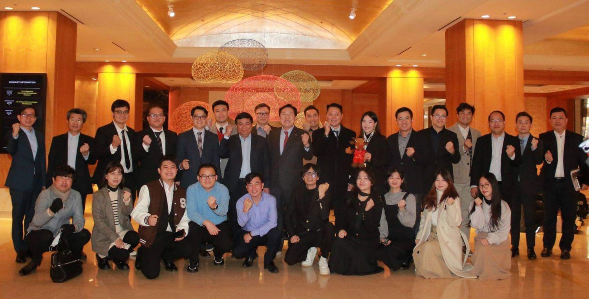
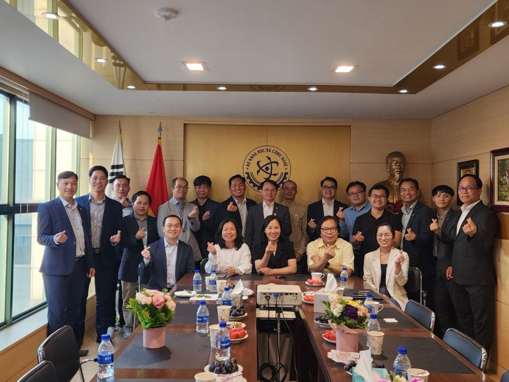
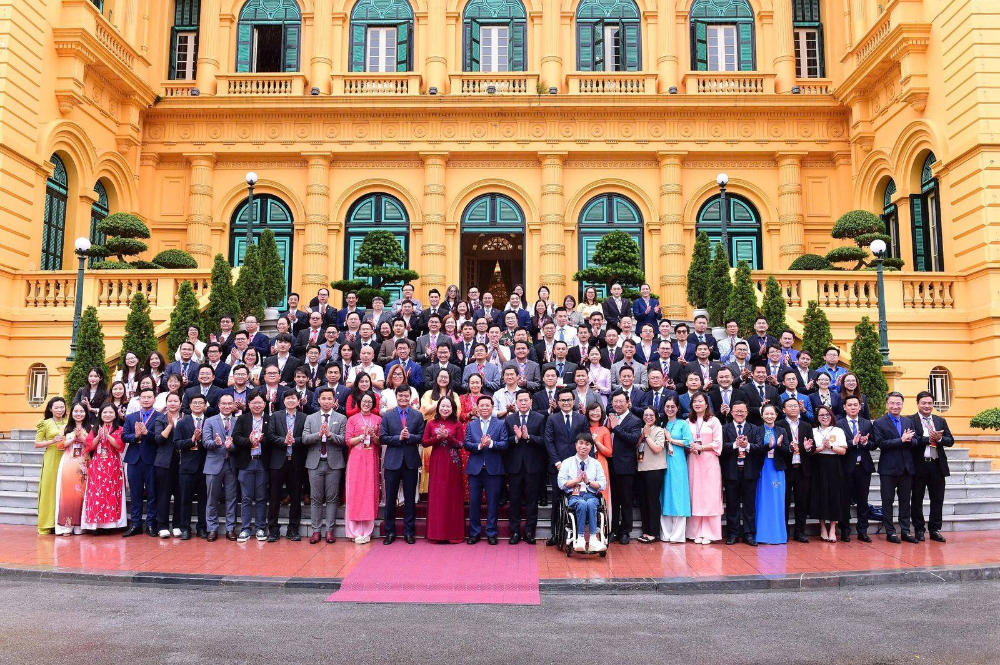
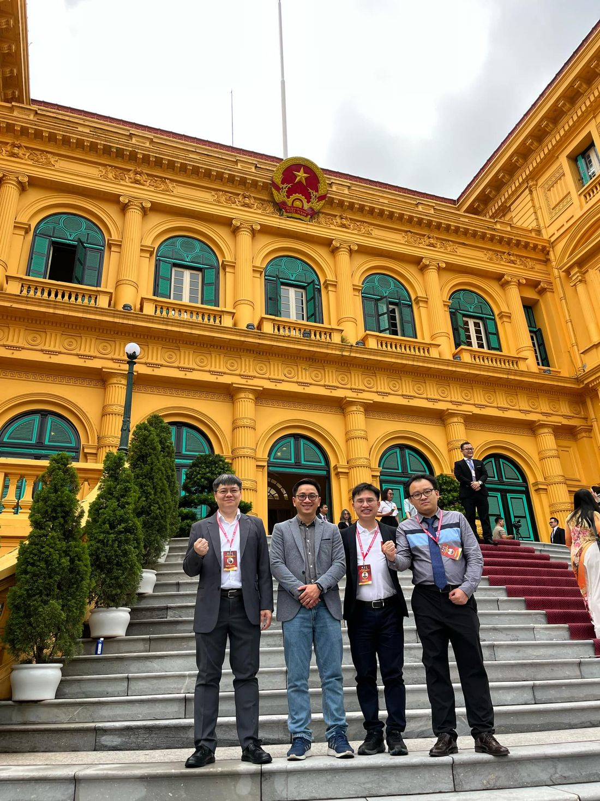
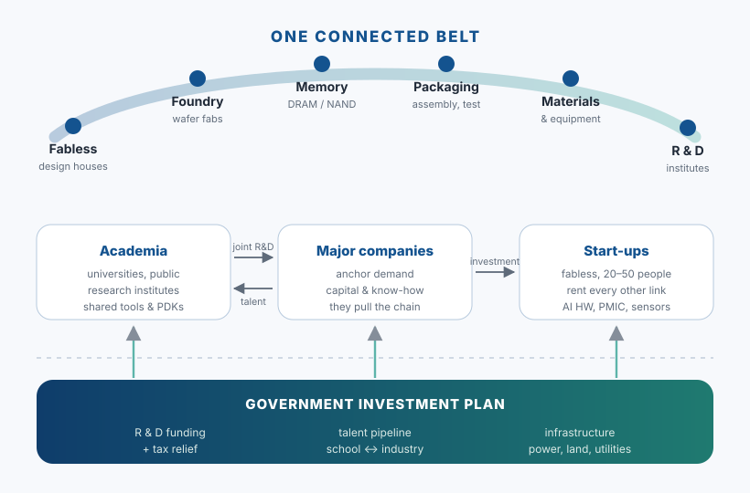

Người kỹ sư Việt ở nước ngoài: làm việc trong một hệ sinh thái công nghệ hàng đầuA Vietnamese engineer abroad: working inside a leading technology ecosystem
Tôi làm kỹ sư thiết kế vi mạch ở Hàn Quốc từ năm 2020. Đây không phải câu chuyện về một đóng góp lớn — tôi không có đóng góp nào đủ lớn để kể như vậy. Đây là ghi chép về một điều bình thường hơn nhiều: khi bạn ngồi làm việc bên trong một hệ sinh thái công nghệ đã hoàn chỉnh, bạn vô tình trở thành một điểm quan sát; và điểm quan sát ấy, nếu chịu khó ghi lại và chia sẻ, thì có ích cho người ở nhà.
I have worked as a chip design engineer in South Korea since 2020. This is not the story of some large contribution — I have made none large enough to tell that way. It is a note about something far more ordinary: when you sit and work inside a technology ecosystem that is already complete, you become, without meaning to, a vantage point; and that vantage point, if you bother to write down what you see and pass it on, is useful to people back home.

1. Một chỗ ngồi bình thường, ở một nơi không bình thường1. An ordinary desk, in a rather unordinary place
Từ năm 2020 tôi làm kỹ sư thiết kế và kiểm chứng IC tại các công ty fabless — công ty thiết kế chip không có nhà máy — ở Hàn Quốc. Công việc hằng ngày của tôi không có gì đặc biệt: viết RTL, dựng môi trường mô phỏng, chạy kiểm chứng, sửa lỗi, rồi lặp lại.
Since 2020 I have worked as an IC design and verification engineer at fabless companies — chip design houses without a factory — in South Korea. My daily work is nothing special: write RTL, build the simulation environment, run verification, fix bugs, repeat.
Cái đặc biệt nằm ở xung quanh. Quanh cái bàn làm việc ấy là một hệ sinh thái bán dẫn gần như đầy đủ mọi mắt xích: trường đại học đào tạo đúng thứ công nghiệp cần, viện nghiên cứu công lập cho doanh nghiệp nhỏ mượn công cụ và quy trình, các xưởng đúc, các nhà máy đóng gói và kiểm thử, các nhà cung cấp IP và EDA, và những tập đoàn lớn đủ sức kéo cả chuỗi đi theo. Một công ty khởi nghiệp vài chục người vẫn có thể làm ra một con chip, vì tất cả những mắt xích còn lại đã có sẵn để thuê.
What is special is everything around it. Around that desk sits a semiconductor ecosystem with nearly every link in place: universities teaching what the industry actually needs, public research institutes lending tools and processes to small companies, foundries, packaging and test houses, IP and EDA vendors, and corporations large enough to pull the whole chain along. A start-up of a few dozen people can still produce a chip, because every other link already exists to be rented.
Làm việc trong đó vài năm thì bạn hiểu một điều mà đọc báo cáo không hiểu được: một ngành công nghiệp không chạy bằng từng công ty riêng lẻ, nó chạy bằng khoảng cách giữa các công ty.
Work inside that for a few years and you understand something no report conveys: an industry does not run on individual companies, it runs on the distances between them.
2. Mạng lưới, và những cuộc gặp2. A network, and a series of meetings
Người Việt làm khoa học và kỹ thuật ở Hàn Quốc có một mạng lưới đổi mới sáng tạo gọi là VINK, nơi mọi người gặp nhau, trao đổi và học lẫn nhau. Tôi là một thành viên, sinh hoạt trong nhóm bán dẫn.
Vietnamese scientists and engineers in Korea have an innovation network called VINK, where people meet, exchange and learn from one another. I am a member, active in its semiconductor group.
Trong khoảng một hai năm trước khi các chính sách lớn được ban hành, có khá nhiều đoàn công tác cấp nhà nước của Việt Nam sang Hàn Quốc — có thể kể đến đoàn của Bộ Kế hoạch và Đầu tư, Bộ Ngoại giao, và cả một đoàn lớn của Thủ tướng Chính phủ. Trong những chuyến đi đó, phía đoàn công tác thường dành thời gian gặp gỡ và làm việc với mạng lưới trí thức người Việt tại đây. Song song, Phòng Khoa học Công nghệ của Đại sứ quán Việt Nam tại Hàn Quốc cũng thường xuyên tổ chức các buổi trao đổi với cộng đồng.
In the year or two before the major policies were issued, a number of Vietnamese state delegations travelled to Korea — among them the Ministry of Planning and Investment, the Ministry of Foreign Affairs, and a large delegation led by the Prime Minister. On those visits the delegations regularly set aside time to meet and work with the Vietnamese intellectual network here. In parallel, the Science and Technology Office of the Vietnamese Embassy in Korea holds frequent exchanges with the community.
Tôi tham gia những cuộc trao đổi ấy cùng nhóm bán dẫn của VINK. Chiến lược phát triển ngành bán dẫn luôn là chủ đề nóng, và cũng dễ hiểu: Hàn Quốc có lực lượng chuyên gia rất mạnh và một hệ sinh thái đủ các vị trí quan trọng, nên câu hỏi "họ làm thế nào" lúc nào cũng được đặt ra. Chúng tôi góp ý từ chỗ mình đang đứng — không phải với tư cách chuyên gia hoạch định chính sách, mà với tư cách những người đang làm thuê trong chính cái hệ sinh thái đó và biết nó vận hành ra sao ở tầng dưới cùng.
I took part in those exchanges with VINK's semiconductor group. Semiconductor strategy was always a live topic, and understandably so: Korea has a very strong body of specialists and an ecosystem covering every important position, so the question "how do they do it" came up every time. We offered what we could see from where we stood — not as policy experts, but as people employed inside that ecosystem who know how it works at the lowest level.


3. Những chính sách ra đời sau đó3. The policies that followed
Trong khoảng 2024–2025, Việt Nam ban hành một loạt văn bản về công nghệ cao và công nghiệp bán dẫn. Những văn bản tôi theo dõi sát nhất:
Through 2024–2025, Vietnam issued a series of documents on high technology and the semiconductor industry. The ones I followed most closely:
| Văn bảnDocument | Nội dung chínhWhat it covers |
|---|---|
| QĐ 1018/QĐ-TTg | Chiến lược phát triển công nghiệp bán dẫn đến 2030, tầm nhìn 2050 — nêu công thức C = SET + 1 và lộ trình ba giai đoạnThe semiconductor industry strategy to 2030, vision 2050 — stating the C = SET + 1 formula and a three-phase roadmap |
| QĐ 1017/QĐ-TTg | Chương trình phát triển nguồn nhân lực ngành bán dẫn đến 2030, định hướng 2050The programme for developing semiconductor human resources to 2030, oriented to 2050 |
| NQ 57-NQ/TW | Đột phá phát triển khoa học, công nghệ, đổi mới sáng tạo và chuyển đổi số quốc giaA breakthrough in science, technology, innovation and national digital transformation |
| NQ 68-NQ/TW | Phát triển kinh tế tư nhânDevelopment of the private sector |
| NQ 59-NQ/TW | Hội nhập quốc tế, trong đó có hội nhập về khoa học công nghệ và đổi mới sáng tạoInternational integration, including in science, technology and innovation |
Công thức C = SET + 1 trong Quyết định 1018 đọc là: C — chip; S — chuyên biệt hoá; E — điện tử; T — nhân tài; và "+1" chính là Việt Nam. Các mục tiêu đặt ra cho năm 2030 gồm 100 công ty thiết kế chip, 1 nhà máy sản xuất chip, 10 nhà máy đóng gói và kiểm thử, cùng 50.000 kỹ sư bán dẫn.
The C = SET + 1 formula in Decision 1018 reads: C — chip; S — specialisation; E — electronics; T — talent; and the "+1" is Vietnam itself. The targets set for 2030 include 100 chip design companies, one fabrication plant, ten packaging and test plants, and 50,000 semiconductor engineers.
4. Diễn đàn Trí thức trẻ Việt Nam toàn cầu lần thứ VI4. The 6th Global Vietnamese Young Intellectuals Forum
Ngày 19/7/2025, Diễn đàn Trí thức trẻ Việt Nam toàn cầu lần thứ VI được tổ chức tại Trường Đại học VinUniversity, Hà Nội, với 201 đại biểu từ trong nước và nhiều quốc gia. Tôi nhận được lời mời tham dự và trình bày một tham luận.
On 19 July 2025, the 6th Global Vietnamese Young Intellectuals Forum was held at VinUniversity in Hanoi, with 201 delegates from Vietnam and many other countries. I was invited to attend and to give a presentation.
Điều tôi nhớ nhất về diễn đàn không phải phần trình bày của mình, mà là những cuộc nói chuyện bên lề: một người làm sinh học ở Nhật, một người làm vật liệu ở Pháp, một người làm AI ở Mỹ, và rất nhiều người đang làm việc ở trong nước. Mỗi người mang về một mảnh của một bức tranh mà không ai nhìn được trọn vẹn.
What I remember most about the forum is not my own talk but the conversations in the margins: someone working in biology in Japan, someone in materials in France, someone in AI in the United States, and a great many people working at home. Each carried back one piece of a picture nobody can see whole.


5. Tham luận: mô hình K-Belt của Hàn Quốc5. The talk: Korea's K-Belt model
Tham luận của tôi có tên "Chiến lược bán dẫn của Hàn Quốc — định hướng cho Việt Nam". Tôi chọn chủ đề này vì đó đúng là thứ tôi nhìn thấy hằng ngày, chứ không phải thứ tôi đọc được. Dưới đây là phần nội dung chính, viết lại cho người đọc ngoài ngành.
My talk was titled "Korea's semiconductor strategy — directions for Vietnam". I chose it because it is what I actually see every day, rather than something I had read about. What follows is its substance, rewritten for a reader outside the field.
Vành đai ấy gồm những gìWhat the belt is made of
K-Belt — tên đầy đủ hay dùng là K-Semiconductor Belt — là chiến lược quốc gia của Hàn Quốc nhằm nối các mắt xích của ngành bán dẫn thành một mạng lưới liên kết chặt chẽ, cả về tổ chức lẫn về địa lý. Các cụm chính nằm quanh vùng thủ đô và phía nam: cụm thiết kế fabless, các xưởng đúc (foundry), các nhà máy bộ nhớ, các nhà máy đóng gói và kiểm thử, cụm vật liệu – thiết bị, và các trung tâm nghiên cứu.
K-Belt — often written in full as the K-Semiconductor Belt — is Korea's national strategy for linking the industry's parts into one tightly connected network, organisationally and geographically. The main clusters sit around the capital region and to its south: the fabless design cluster, the foundries, the memory plants, the packaging and test houses, the materials-and-equipment cluster, and the research centres.

Vì sao khoảng cách địa lý lại quan trọng đến thế? Vì vòng lặp sửa lỗi của ngành này rất đắt. Khi một lô wafer ra kết quả không như mong đợi, kỹ sư thiết kế, kỹ sư quy trình và kỹ sư kiểm thử cần ngồi lại với nhau — nếu ba người đó ở ba múi giờ, mỗi vòng lặp mất hàng tuần; nếu họ cách nhau một giờ lái xe, mỗi vòng lặp mất một ngày. Cả một ngành chạy nhanh hơn chỉ nhờ chi tiết đó.
Why does physical distance matter so much? Because the debug loop in this industry is expensive. When a wafer lot comes back wrong, the design engineer, the process engineer and the test engineer need to sit together — if those three are in three time zones, each loop costs weeks; if they are an hour's drive apart, each loop costs a day. A whole industry moves faster on that detail alone.
Ba nhóm chủ thể, và dòng chảy giữa họThree kinds of actor, and what flows between them
Phần dưới của sơ đồ mới là phần tôi muốn nhấn mạnh nhất ở diễn đàn. Một hệ sinh thái không sống bằng việc có đủ loại công ty, nó sống bằng những dòng chảy giữa chúng:
The lower half of the diagram is what I most wanted to stress at the forum. An ecosystem does not live by having one of each kind of company; it lives on the flows between them:
- Đại học và viện nghiên cứu ↔ tập đoàn lớn: nghiên cứu chung, và quan trọng hơn là một đường ống nhân lực được đào tạo đúng thứ công nghiệp cần.
- Tập đoàn lớn → start-up: vốn, đơn hàng đầu tiên, và cả tri thức vận hành. Một tập đoàn lớn khoẻ không bóp chết start-up, nó tạo ra thị trường cho start-up.
- Viện nghiên cứu → start-up: cho thuê công cụ, quy trình, phòng đo. Đây là mắt xích rẻ nhất mà hiệu quả nhất — một công ty hai mươi người không thể tự mua những thứ đó.
- Academia ↔ major companies: joint research, and more importantly a pipeline of people trained in what the industry actually needs.
- Major companies → start-ups: capital, first orders, and operating know-how. A healthy giant does not crush start-ups; it creates the market they sell into.
- Research institutes → start-ups: renting out tools, processes and measurement labs. This is the cheapest link to build and the most effective — a twenty-person company cannot buy any of that itself.
Quy mô cam kếtThe scale of the commitment
Theo những con số tôi tổng hợp trong bài trình bày: đầu tư tổng thể khoảng 450 tỷ USD đến năm 2030; miễn giảm thuế lên đến 260 tỷ USD cho đầu tư R&D và cơ sở vật chất; và trợ cấp 50% chi phí xây dựng hạ tầng năng lượng cho nhà máy bán dẫn. Con số cuối cùng ít được nhắc nhưng rất đáng chú ý: một nhà máy bán dẫn tiêu thụ điện ngang một thị trấn, nên điện không phải chuyện phụ — nó là điều kiện để nhà máy tồn tại.
By the figures I compiled for the talk: total investment of about 450 billion USD to 2030; tax relief of up to 260 billion USD for R&D and facility investment; and a 50% subsidy on the cost of building energy infrastructure for semiconductor plants. That last one is rarely quoted and well worth noticing: a fab consumes as much electricity as a small town, so power is not a side issue — it is the condition for the plant existing at all.
Kết quả, nhìn từ tầng dưới cùngResults, seen from the bottom floor
Tôi không ở vị trí đánh giá hiệu quả vĩ mô của chiến lược. Nhưng ở tầng tôi đang đứng thì thấy rõ một làn sóng start-up fabless về phần cứng AI, IC quản lý năng lượng và cảm biến thông minh — những công ty vài chục người vẫn ra được chip, vì mọi mắt xích còn lại đã có sẵn để thuê. Chính công ty tôi làm là một mắt xích nhỏ trong mạng lưới đó, dùng tài nguyên của nó và được nó định hướng.
I am in no position to judge the strategy's macro-economic results. But from where I stand the fabless start-up wave is plain to see — AI hardware, power management ICs, smart sensors — companies of a few dozen people still shipping chips, because every other link already exists to be rented. The company I work for is itself one small link in that network, using its resources and taking its direction from it.
Cái bê nguyên được và cái khôngWhat transfers, and what does not
Phần kết của tham luận, và cũng là phần tôi nghĩ nhiều nhất. Không bê nguyên được: Hàn Quốc có vài chục năm tích luỹ chế tạo và hai tập đoàn bộ nhớ tầm thế giới làm neo cho cả chuỗi — đó là điểm xuất phát, không phải thứ mua được bằng chính sách. Bê được : cơ chế nối các mắt xích với nhau; giáo dục gắn với doanh nghiệp; và việc nhà nước đứng ra gánh phần hạ tầng mà không doanh nghiệp nhỏ nào gánh nổi. Ba thứ đó không đòi hỏi phải giàu trước, chỉ đòi hỏi làm đúng thứ tự.
That was how the talk ended, and it is the part I have thought about most. What does not transfer: Korea has decades of accumulated manufacturing and two world-scale memory companies anchoring the chain — that is a starting position, not something policy can purchase. What does transfer: the mechanism for connecting the links; education tied to industry; and the state carrying the infrastructure no small company can carry. None of those three requires being rich first. They require doing things in the right order.
Mở trong tab mớiOpen in a new tab
6. Bốn đề xuất tôi đưa ra6. The four things I proposed
- Đầu tư dài hạn, dựng dần từng mắt xích của hệ sinh thái thay vì kỳ vọng một bước nhảy — đúng tinh thần đã có trong C = SET + 1 và các nghị quyết, quyết định kể trên.
- Phát triển nhân lực bằng giáo dục gắn với doanh nghiệp: trường dạy đúng thứ doanh nghiệp cần, doanh nghiệp tham gia vào chương trình. Đây là chỗ Hàn Quốc làm rất bài bản và cũng là chỗ dễ học theo nhất vì không cần vốn lớn.
- Hỗ trợ start-up fabless và tham gia vào hệ sinh thái quốc tế — Hàn Quốc, Mỹ, Trung Quốc, Nga — thay vì cố dựng một hệ sinh thái khép kín.
- Hợp tác quốc tế một cách cụ thể: chú trọng mời chuyên gia nước ngoài, và — điều hay bị quên — cả chuyên gia bán hàng. Một con chip tốt mà không bán được thì chuỗi không khép lại.
- Invest for the long term and build the links one at a time rather than hoping for a single leap — which is the spirit already present in C = SET + 1 and the resolutions and decisions listed above.
- Grow people through education tied to industry: universities teaching what companies actually need, companies taking part in the curriculum. Korea does this systematically, and it is the easiest part to copy because it needs no large capital.
- Support fabless start-ups and join international ecosystems — Korea, the United States, China, Russia — instead of trying to build a closed one.
- Make international cooperation concrete: bring in foreign specialists and — the part usually forgotten — sales specialists too. A good chip that cannot be sold leaves the chain unclosed.
7. Người kỹ sư ở xa thật sự làm được gì7. What an engineer far from home can actually do
Nếu phải rút lại thành vài điều thực tế, tôi nghĩ là thế này:
If I had to reduce it to a few practical things, I would say this:
- Kể lại cơ chế, đừng chỉ kể kết quả. Con số đầu tư thì ai cũng tra được. Thứ khó thấy từ xa là cách một hệ sinh thái nối các mắt xích với nhau — và đó lại chính là thứ người ở trong nhìn rõ.
- Nói từ chỗ mình đứng. Tôi là kỹ sư cấp senior, không phải chuyên gia hoạch định chính sách. Góp ý đúng tầm của mình thì có ích; nói quá tầm thì thành nhiễu.
- Có mặt khi được mời. Phần lớn cơ hội đóng góp của tôi đến từ việc đơn giản là có mặt ở những buổi gặp mà đáng lẽ tôi có thể viện cớ bận.
- Kết nối hai đầu. Người ở nhà cần biết bên này vận hành ra sao; bên này cần biết ở nhà đang thiếu gì. Một kỹ sư đứng giữa có thể làm cái việc nhỏ là dịch hai thứ đó cho nhau.
- Viết lại. Một buổi nói chuyện thì bay đi; một trang ghi chép thì còn lại — đó cũng là lý do có trang web này.
- Describe the mechanism, not just the outcome. Investment figures are searchable by anyone. What is hard to see from a distance is how an ecosystem joins its links together — and that is precisely what someone inside can see.
- Speak from where you stand. I am a senior engineer, not a policy expert. Contributing at your own level is useful; speaking above it is noise.
- Turn up when invited. Most of my chances to contribute came simply from being present at meetings I could easily have excused myself from.
- Connect the two ends. People at home need to know how things run here; people here need to know what is missing at home. An engineer standing in between can do the small job of translating one to the other.
- Write it down. A conversation evaporates; a page of notes remains — which is part of why this site exists.
Không có việc nào trong số đó là đóng góp lớn. Nhưng cộng lại, qua nhiều người và nhiều năm, tôi tin là chúng có trọng lượng hơn vẻ ngoài khiêm tốn của từng việc một.
None of these is a large contribution. But added up, across many people and many years, I believe they weigh more than each of them modestly appears to.
Đọc thêmFurther reading
- Trung tâm Đổi mới sáng tạo Quốc gia (NIC) — đơn vị chủ trì mạng lưới đổi mới sáng tạo Việt Nam, trong đó có mạng lưới tại Hàn Quốc (VINK) nói ở trên. the agency behind Vietnam's innovation networks, including the Korea network (VINK) mentioned above.
- Cổng thông tin văn bản của Chính phủ — tra toàn văn các văn bản nêu trong bài theo số hiệu: 1018/QĐ-TTg, 1017/QĐ-TTg, 57-NQ/TW, 68-NQ/TW, 59-NQ/TW. Tôi dẫn cổng tra cứu thay vì một đường dẫn sâu, vì đường dẫn sâu vào các cổng này thường đổi. search the documents cited above by their numbers: 1018/QĐ-TTg, 1017/QĐ-TTg, 57-NQ/TW, 68-NQ/TW, 59-NQ/TW. I link the search portal rather than a deep link, because deep links into these portals tend to move.
- Mật mã hậu lượng tử, AI & Mã sửa lỗi — phần kỹ thuật của trang này, nơi tôi viết về chính công việc hằng ngày nói ở trên. the technical section of this site, where I write about the daily work described above.